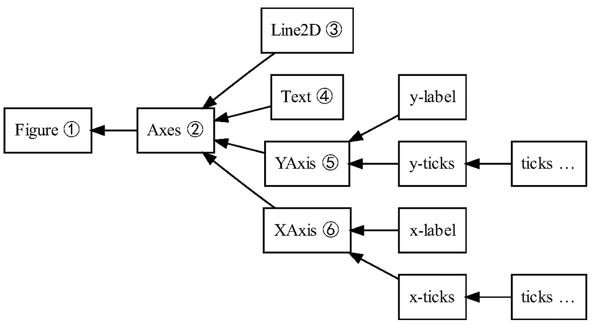
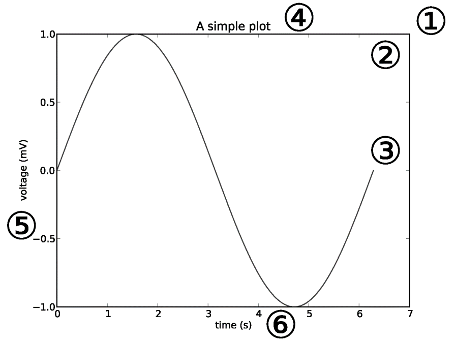

WUR Geoscripting 
Week 3, Lesson 8: Introduction to Python for Geoscripting
Jan Verbesselt, Jorge Mendes de Jesus, Aldo Bergsma, Johannes Eberenz, Dainius Masiliunas, David Swinkels, Judith Verstegen, Corné Vreugdenhil - 2021-12-23
Introduction
Good morning! Today we will start working with Python for Geo-scripting and do a refresher of functions in Python. If you are unfamiliar with Python and/or feel that you need more training, follow one of the Datacamp courses as introduction into Python before today: * Introduction to Python | recommended to follow if you haven’t any scripting experience so far * Python for R users | recommended if you have experience already in R
Today’s schedule is:
- Get Introduced to Python
- Learn how to work with virtual environments: Conda
- Learn how to run a Python script from the terminal
- Get introduced to Python editors and IDEs
- Refresh Python programming knowledge
- Exercise
Introduction to Python
Python is a jack-of-all-trades programming language, that is free, flexible, open-source, cross-platform and has a very large community behind it. If you ask Python programmers what they like most about Python, they will often cite its high readability and high availability of good packages. There are many Python packages out there for geo-scripting, data wrangling, visualization and machine learning. For example:
- Geo Scripting
- GeoPandas (Vector Processing)
- RasterIO (Raster Processing)
- GDAL/OGR (Vector and Raster Processing)
- QGIS plugins (Open Source GIS)
- ArcPy (Propietary GIS)
- Data Handling
- Pandas (Dataframes and Data Analysis)
- Numpy (Scientific Computing)
- Visualization
- Matplotlib (General Graphics)
- Seaborn (Statistical Graphics)
- Folium (Interactive Maps)
- Machine Learning
- TensorFlow (Deep Learning)
- Keras (Deep/Machine Learning)
- Scikit-Learn (Machine Learning)
Python package management with conda
A set of tools co-exist for installing and managing packages. It is possible to install packages on your base Python interpreter, but sooner or later you will get conflicting Python packages since packages have varying dependencies. It can even break your system Python interpreter. So, instead, we recommend to create a conda environment on your local machine for each project. In conda environments, basically anything, such as software, C libraries or R packages, can be installed, but we use them here for installing Python packages. Packages installed in one environment do not interfere with your base Python or with other conda environments.
Conda installation
Conda can be downloaded in two versions: Anaconda and Miniconda. The difference is that Miniconda is just shipping the repository management system. So when it is installed, you will only have the management system without packages. Whereas with Anaconda, you get the distribution with most popular Python packages already built in.
In Geo-scripting Miniconda is used. To install Miniconda in your Linux environment, we have prepared a short Bash script for you. Just run the following lines of code, line by line, in a new terminal window.
git clone https://github.com/GeoScripting-WUR/InstallLinuxScript.git
cd InstallLinuxScript/user
chmod u+x ./install.sh
./install.shThis will install Miniconda into ~/miniconda3, and also all the necessary packages for the Python week, into a new environment called geoscripting. You can also read the Bash code of the scripts you run to know exactly how they work.
Finally, restart your terminal to be able to use conda in the terminal. Next, let’s see how to use Conda in case you want make new virtual environments by yourself, or install packages after creating the environment.
Conda usage
Conda creates isolated environments with sets of packages, that do not interfere with your base Python or with other conda environments. To create an environment:
conda create --name geotest python=2.7 numpyThis would create a new environment called geotest with Python 2.7 and NumPy installed into the conda environment. Another option is to create an environment from a .yaml file, in which all required modules are listed; see the example later on. To create an environment from such a file, use the argument --file (or --f in short), see the conda (documentation)[https://docs.conda.io/projects/conda/en/latest/commands/create.html]. To list the available environments:
conda info --envsConda puts an asterisk (*) in front of the active environment. To activate the environment:
## Cross-platform (but not always working, like in our VDI, try it)
conda activate geotest
## Linux, macOS
source activate geotest
## Windows
activate geotestAfter this, the current environment is shown in parentheses in front of your prompt ((geotest)$). Note that the activated environment is only valid for the shell in which you activated it. For instance, if you close the shell window and open a new one you will have to activate it again. If you want to install a new package and are inside the conda environment, the package is installed simply with conda or pip. Generally, installing with conda is recommended. In the documentation of most Python packages the recommended way to install can be found.
After creating a conda environment, (additional) Python packages can be installed. There are three recommended ways to install packages, which we list below. In the documentation of most Python packages the recommended way to install them can be found.
- Using conda to install and manage packages. Conda packages are downloaded from conda channels, which are URLs to directories containing conda packages. Generally, installing with conda is the preferred method.
- Using pip to install packages and conda to manage packages. Pip is available for Windows, macOS and Linux. Pip can also install binary wheels on Windows.
- Using the distribution’s package manager (only on Ubuntu, that is
sudo apt-get install python-*).
The conda command searches a set of channels. By default, packages are automatically downloaded and updated from the default channel. To search for a package, type:
conda search spyderThis gives a list of all packages that have “Spyder” in the name and lists all available versions. To install:
conda install spyderThis would install the latest version of the Spyder package (Python IDE). Note that this would install it into your currently activated environment.
Multiple packages can be installed at the same time:
conda install geopandas pandasSometimes packages are not directly available from the standard conda channels, but require a specific conda channel. The documentation of Python packages often show the recommended conda channel to install the Python package. For example, the folium package can be installed from the conda-forge channel:
conda install --channel conda-forge foliumAs explained above, another alternative is to use pip to install packages (not possible for all packages), as shown here for the packages rasterio and rasterstats:
pip install rasterio rasterstatsIn addition, as you saw with Spyder install, conda is able to install some non-Python packages that have Python bindings, such as Spyder and GDAL. This is useful for making sure your Python and binary versions match and do not interfere with the system-wide ones. Some additional helpful utilities for package management in this context are:
conda listto check which packages are installed in root or in the active environment;python --versionorgdal-config --versionto check which Python or GDAL version is used in the environment;which spyderortype spyderto find out which Spyder executable is used either from system or conda environment.
Removing packages is just as simple:
conda remove geopandas pandas folium
pip uninstall rasterio rasterstatsNow, we deactivate the environment and return to base environment.
## Cross-platform
conda deactivate
## Linux, macOS
source deactivate
## Windows
deactivateWhen we are finished, and do not need the environment for next time, we can remove the environment geotest.
conda remove --name geotest --allRunning a Python script in the terminal
Within a conda environment, Python can be started directly, or can be called to run a script file. To start Python directly:
pythonNow, you can type Python expressions that will be executed one by one:
import sys
print('Good morning, you are running Python:', sys.version)exit()
# or
quit()Usually, we do not want to run expressions one by one, but build scripts instead, to ensure transferability and reproducibilty. Now, create a new text file, and (re)name it (to) test.py. Open it, for example with a text editor, paste in the code you used above (import sys etc.), and save the script. Navigate in the terminal to the location where this script is stored, using cd. Finally, run the script with:
python test.pyThe output is printed to the terminal. Running a script from the terminal is less error-prone than running it from an IDE (see below), such as Spyder, as IDEs often keep variables in memory after the script has finished running. Therefore, running a script from the terminal is a good final test before submitting an exercise or assignment.
Python editors and IDEs
There is a number of Integrated Development Environments [IDE] for Python. An IDE is a software application that provides facilities for software development.
- Spyder is a lightweight IDE. In the Geo-scripting course Spyder is recommended as the Python IDE.
- Jupyter Notebook integrates visualization with code and is suitable to make tutorials, simple dashboards, quick visualizations, and do prototype testing. Jupyter Notebooks run in your browser on a localhost server or on a web server. They allow for various programming languages, e.g. Python, R, Julia, Spark or PySpark.
- PyCharm Community Edition is a free professional Python IDE with a lot of advanced functionality, such as integrated GIT version control, code completion, code checking, debugging and navigation. This IDE can optionally be used by more advanced scripters during the Geo-scripting course instead of Spyder, but do know that you will not be assisted solving IDE-related issues.
Jupyter Notebooks
Jupyter Notebooks integrate code and visualization, and are therefore hepful for demonstration purposes. Install jupyter and the module folium in an existing or new environment that includes Python and start Jupyter:
jupyter notebookJupyter should pop up in your browser. You will see a menu with all files in your working directory. The Jupyter Notebook will only see files that are accessible from the working directory in which you launched the notebook!
Make a new folder: New → Folder, rename the folder (check the box next to the new ‘Untitled Folder’ and click ‘Rename’ in the top) and, in this folder, create a new Python3 Jupyter Notebook New → Python 3. Give your notebook a name by clicking on untitled. Note that this creates a file with the extension .ipynb, which stands for Jupyter Notebook.
Feel free to have a go at the user interface tour (Help → User Interface Tour), or hover over the toolbar to check out the tools. The main tools are:
- Save and checkpoint
- Insert cell below
- Run
- Code/Markdown/Heading (List box)
Similar to RMarkdown, Jupyter Notebooks have code cells (Code) and text cells (Markdown). Insert an extra cells by clicking the + button and change the first cell from code to markdown. Enter some documentation for your code (e.g. your team name, exercise and date). Leave the other cell on code.
Type the following Python code in the code cell:
import folium
m = folium.Map(location=[51.9700000, 5.6666700], zoom_start=13)
m
Run the code cell by selecting it and pressing the Run button, or press CTRL + Enter or Shift + Enter. You’ll see a map visualized below your code. Try to drag the map to play around with it.
Your Jupyter Notebook is automatically saved as an .ipynb file on your computer (the file extension comes from the historic name “IPython Notebook”). The notebook can be downloaded as a Python script, pdf or html. You can also save it manually.
To exit a notebook properly, use File → Close and Halt. After that, by pressing Ctrl + c in the terminal where Jupyter Notebook server is running, you cancel the running process. The terminal goes back to command line and you can exit the virtual environment by typing conda deactivate.
conda deactivateSpyder
The Spyder IDE can be started in a terminal when the spyder package is installed in the active conda environment (so make one and do this!). Spyder automatically uses the Python interpreter of the active conda environment. Make a new directory for your main script, other scripts and data with some bash code and start Spyder from the terminal in which you have activated the ‘geoscripting’ environment, as follows:
cd ~/Documents/
mkdir PythonRefresher #or give the directory a name to your liking
cd ./PythonRefresher
mkdir scripts
mkdir data
mkdir output
spyderIn Spyder you should see an editor, a file explorer and a console. Have a look at the toolbar. Some important shortcuts are:
- F5 to run your script
- CTRL + S to save your script
- CTRL + 1 to comment/uncomment your code
- TAB to indent your code
- SHIFT + TAB to unindent your code
Open a new file and save your Python script in the main directory you just made and name it main.py (File – > New File –> Save As).
Python programming refresher
Finally, in this tutorial we will do a quick Python refresher. We advise you to code in Spyder, as this IDE will be used in the rest of the Python week too.
First, make a folder structure for this tutorial:
cd ~/Documents/
mkdir PythonRefresher #or give the directory a name to your liking
cd ./PythonRefresher
mkdir scripts
mkdir data
mkdir outputNext, create a text file, (re)name it (to) refresher.yaml, and copy the following content into the file:
name: refresher
channels:
- conda-forge
dependencies:
- python
- numpy
- matplotlib
- spyderNow, create a new conda environment based on this file:
conda env create --f refresher.yamlOnce everything is installed, activate the environment and start spyder:
source activate refresher
spyderCreate a new Python script and save it in the scripts folder.
Important to note: for compatibility, it is best to install packages from the same channel as much as possible. Given that packages in the file refresher.yaml are installed from the conda-forge channel, it is wise to use this same channel when you want to install additional packages in your environment.
Classes and objects
Python is an object-oriented programming language. That is a programming paradigm that structures a code hierarchically with classes and objects. A class is a blueprint of functions and attributes to build an object, while an object is a self-contained component operationalizing the functions and attributes.
For example, one could have a class dog with functions, bark() and doginfo(), and properties breed and age.
class Dog:
def __init__(self, breed, age):
self.breed = breed
self.age = age
def bark(self):
print("bark bark!")
def doginfo(self):
print("This " + self.breed + " is " + str(self.age) + " year(s) old.")One can then create an instance of this class, i.e. an object, that represents Ozzy, a Maltese of two years old. This object can apply the function eat() and run(). We can call the attributes and functions with the dot notation:
ozzy = Dog("Maltese", 2)
print(ozzy.breed)
print(ozzy.age)
ozzy.bark()
ozzy.doginfo()During Geo-scripting, you do not need to define your own classes. However, sometimes existing classes of modules will be used, such as a DataFrame in Pandas or a GeoDataFrame in GeoPandas. It is therefore important to understand the concepts of classes and objects generated from them.
Question 1: Suppose that we want to build a script in Python of an orchestra playing a song. What would be the class and what would be the objects?
Data types and variables
Values belong to a data type. The most important built-in (base) types are: * integer * floating point * Boolean * several compound data types (next section), like string
Python is a strongly typed language. That is, you cannot perform operations inappropriate to the type of the value. For example, attempting to add integers to strings will fail. For this reason, understanding and being aware of value types in Python is crucial.
Values can be cast to other types, e.g.,:
print(int(10.6))Question 2: What is the difference between 10 and 10.0 in Python?
Often, we do not use values directly in a script. Instead, we use access them through variables. A variable is a way to reference to a known or unknown value. A value is assigned to a variable with the =-sign, e.g.:
building = 'Gaia'
buildingnumber = 101
print(building + ' is in Wageningen')As opposed to other programming languages, in Python, the data type does not need to be explicitly defined when creating a variable. Python derives the data type of the variable from the value assigned to it. In the code above, the variable building is thus a string, and the variable buildingnumber is an integer, without having defined this explicitly.
Variables should: 1) start with a lowercase letter, and 2) not contain spaces. Furthermore, it is advisable to use meaningful variable names, both for yourself and for (future) users of your code.
Compound data types
Compound data types or container types are Python data types that have in common that they can be broken down into smaller elements. The most commonly known compound data types are: - string - list - dictionary - tuple - Numpy array
For most compound data types, the elements can be accessed by providing the index of the element with the square-bracket operator, [ ]. This works, for example, for items in lists and letters in strings. Notice that indexing in Python, as opposed to other languages like R, STARTS AT 0! Positive indexes access elements from the front, and negative indexes from the back. Here is an example for accessing items in a list, and a string:
# LIST
campus = ['Gaia', 'Lumen', 'Radix', 'Forum']
print(campus[3]) # Forum
print(campus[-1]) # the last item of the list
print(campus[0:3]) # the first 3 items (index 0, 1, and 2), i.e. 'slicing'
our_building = campus[0] # GAIA
# STRING
print(our_building[0]) # G
print(our_building[0:2]) # GAQuestion 3: What building is
campus[-2]? Test it.
Lists can be nested. That means that a list is an item in another list. Accessing items in nested lists works the same as in regular lists, e.g,:
samples = [["x","y","z"],[12,32,7],[12,40,7]]
# access the x
header = samples[0]
first_item = header[0]
# or at once
first_item = samples[0][0]
Question 4: How can we access the value 40 above? Test it.
A dictionary is set of key-value pairs. The key can be used to access the value. A dictionary is different from the other compound data types as it is not ordered, i.e. the order of the elements is undetermined. As such, the square-bracket operator, [ ] cannot be used.
campus_dictionary = {101:'Gaia',
100:'Lumen',
107:'Radix',
102:'Forum',
104:'Atlas'}
print(campus_dictionary[102])In contrast to a list, a numpy array is a homogeneous multidimensional array from the NumPy package (see section about modules and packages). Homogeneous refers to the fact that all data in one array have to be of the same type. NumPy’s array class is called ndarray (n-dimensional). In the array, the dimensions are called axes, and the number of axes is the rank.

Below, you see to create a numpy array from a set of lists, and how to create standard arrays, filled with zeroes, ones, or random number, often to be updated with actual data later in your script.
import numpy as np
# Create array from list
a = np.array([[1, 3, 4], [2, 7, 6]])
print('a is', a)
# Create standard arrays.
print(np.zeros((3,2)))
print(np.ones((2,3), np.int))
print(np.ones((2,3), np.int) * 5)
print(np.empty((2,2)))
Just like with other compound data types, the elements can be accessed with the square-bracket operator, [ ]. But in numpy arrays, the is one index per dimension (per axis), separated by commas. Muliple elements per dimension can be selected with a colon (from - to, excluding). Leaving out the index before or after the colon, selects all elements from the beginning or to the end, respectively, see the examples in the figure below.

Finally, structured numpy arrays can have a different data type per column, i.e. per attribute. It is thereby similar to a DataFrame in R (we’ll find another similar data type tomorrow). In structured numpy arrays, you can access or edit attribute values either by dimension or by attribute name.
# Create create structured numpy array filled with zeroes
data = np.zeros(4, dtype={'names':('name', 'age', 'weight'),
'formats':('U10', 'i4', 'f8')})
print(data.dtype)
# Now we can fill this structured array with data (lists)
# of the correct type
name = ['Alice', 'Bob', 'Cathy', 'Doug']
age = [25, 45, 37, 19]
weight = [55.0, 85.5, 68.0, 61.5]
data['name'] = name
data['age'] = age
data['weight'] = weight
print(data)
Functions
A function is a section of code with a common purpose. Functions can be useful for 1) making the main part of the code concise, 2) debugging, as functions can be tested and edited separately from the main code, and 3) reuse of code in the same or other programs.
Functions may (not always) accept argument(s), perform an action, and may (not always) return value(s). For example, the built-in function ‘int()’ we have seen before performs the action of converting a value to integer type:
# return value into a variable, the function name, its (single) argument
myint = int(10.6)
You can also create functions yourself. The syntax for creating a function is:
def functionname(arg1, arg2, argn):
... (expression1) ...
... (expression2) ...
... (expressionn) ...
return returnvar1, returnvar2, returnvarn
For example, we could create a function to compute the area of a rectangle based on its width and length, provided as arguments, and return the output:
def calculate_rectangle_area(width, length):
rectangle_area = width * length
return rectangle_area
print(calculate_rectangle_area(4,3))
output_number = calculate_rectangle_area(width=4,length=3)
print(output_number)Functions or classes can be made more informative by docstrings:
def calculate_rectangle_area(width, length):
"""Computes the area of a rectangle by multiplying width and length.
:width: width is the width of the rectangle
:length: length is the length of the rectangle
:returns: width * length
"""
rectangle_area = width * length
return rectangle_area
print(calculate_rectangle_area(4,3))
Variables created in functions are local. That means that a variable created in a function does not exist outside of the function. So, here, rectangle_area cannot be accessed outside of the function definition (after the indented part of the code).
Question 5: Test typing
print(rectangle_area)at the end of the code block defined above. What happens? Why is that?
Modules and packages
Python packages and modules are collections of classes and functions. Any Python file is a module, its name being the file’s base name without the .py extension. A package is a directory of Python modules containing an additional __init__.py file, to distinguish a package from a directory that just happens to contain a bunch of Python scripts. Packages can be nested to any depth, provided that the corresponding directories contain their own __init__.py file.
import math
print(math.pi)
from math import pi
print(pi)
from math import pi as ip
print(ip)
import numpy as np
print(np.pi)Question 6: What are the differences between these four ways to import modules and/or packages?
Often-used internal packages/modules:
os: Operating system featuressys: System specific configurationmath: Mathametical functions, operators and constantsdatetime: Date/Time functionality
Looking for help
There are several ways to find help with programming in Python. Searching the internet typically solves your problem the quickest, because it finds answers on multiple platforms, such as StackOverflow and Github. During Geoscripting we have the forum to ask and give help. Asking your friends or colleagues in person is also a great way to learn and fix programming problems. Another good option is get documentation from the package website or inside Python:
import sys
help(sys)See how the objects and functions in the sys package got listed.
Question 7: What kind of functionality does the
syspackage provide?
Conditionals
Comparison operators compare two values or, more commonly, variables. The operands (x and y below) are often numerical, e.g. floating point or integer. The result of comparison operators is a 0 (False) or 1 (True), of type Boolean.
x == y # TRUE if x is equal to y
x != y # TRUE if x is not equal to y
x > y # TRUE if x is greater than y
x < y # TRUE if x is less than y
x >= y # TRUE if x is greater than or equal to y
x <= y # TRUE if x is less than or equal to yLogical operators evaluate the logical relation between two values or variables. The operands (x and y below) are in most cases Boolean. The result of logical operators is also Boolean.
x and y # TRUE if both x and y are TRUE
x or y # TRUE if x or y are TRUE
not x # TRUE if x is FALSEA conditional statement checks whether a condition is fulfilled and only if it does, it executes a block of code. The syntax of a conditional statement is:
if condition:
... (expression1) ...
... (expression2) ...
... (expressionn) ...
else:
... (alternative_expression1) ...
... (alternative_expression2) ...
... (alternative_expression3) ...
The condition should be a Boolean variable, or an expression resulting in a Boolean. A condition is typically built up using comparison operators and/or logical operators. The expressions after the if-statement are executed when the condition is met, while the conditions in the else-statement (not mandatory to include) are executed when the condition is not met. Mutiple conditions can be checked consecutively with one or more elif-statements in-between the if and else. For example:
x = 3
if x == 1:
print("it is one")
elif x == 2:
print("it is two")
elif x == 3:
print("it is three")
else:
print("above 3")Question 8: Think of a conditional statement that uses logical operators in the condition instead of comparison operators.
Loops
Loops are an essential construct in Python, more than in R. Two types of loops exist: - the for-loop, used when it can be known beforehand how many iterations are required - the while-loop, used when it cannot be known beforehand how many iterations are required
The for-loop is the preferred construct, as it is computationally more efficient and less error-prone than the while-loop; no chance to end up in an endless loop or to accidentally skip an element (iteration). The syntax of a for-loop is:
for element in compound:
... (expression1) ...
... (expression2) ...
... (expressionn) ...
Often i, standing for iterator, is used as the element, but it can be any variable name. Key is that the current element is put into that variable in each iteration, so the element is what one should use in the expressions in the for-loop. The for-loop works on any compound data type:
# LOOPING A LIST
campus = ['Gaia', 'Lumen', 'Radix', 'Forum']
for i in campus:
print(i)
# LOOPING A STRING
our_building = campus[0] # GAIA
for letter in our_building:
print(letter)
The while-loop works on a condition instead of on a compound data type. The syntax of a while-loop is:
while condition:
... (expression1) ...
... (expression2) ...
... (expressionn) ...
In a while-loop, when an element is used, it is not automatically altered in each iteration; the alteration needs to be explicitly programmed.
n = 0
while n < 20:
print(n)
n = n+1
Question 9: What is the last number printed? Now print n after the loop (not in the indented part); what does it print?
You may remember that variables in a function are local. This is different for loops: Variables in a loop are NOT local, and thus affect what happens outside of the loop, as demonstrated by the last question. Be aware of this.
Visualization
Visualization is essential to make concepts understandable and patterns recognizable. In Python, matplotlib is a general plotting package. It is used as a base for many other, more tailored, packages. One of the core advantages of matplotlib is that the representation of figure is separated from the act of rendering it. This enables building increasingly sophisticated features and logic into the figure, a bit like making a map in a GIS.
In matplotlib, a figure object contains axes, or subplots. These axes contain an x-axis, a y-axis and can contain lines and text. This hierarchy is important to understand when you want to edit a plot:


Let us create a simple line figure, based on data in Numpy arrays.
import numpy as np
from matplotlib import pyplot as plt
# Create some data
x = np.arange(-np.pi, np.pi, 0.2)
y = np.sin(x)
# Plot x against y
plt.plot(x,y)
# Show in an interactive plot
plt.show()

Instead of a single plot, the figure can have subplots (here two). Using the sharex and/or sharey argument, the axes can be aligned automatically, for easy comparison between the subplots. Also, we can add a title and axis labels. Finally, we can change the positions of the tick marks on an axis to something meaningful in the context of trigonometric functions and customize the labels with regular text or lateX. Check if you understand what object in the hierarchy is edited and why.
import numpy as np
from matplotlib import pyplot as plt
# Create some data
x1 = np.arange(-np.pi, np.pi, 0.2)
y1 = np.sin(x1)
x2 = np.arange(-np.pi, 0, 0.2)
y2 = np.cos(x2)
# Initiate a figure
# A figure with two subplots
f, axarr = plt.subplots(2, sharex=True)
# subplots are stored in an array
line = axarr[0].plot(x1, y1)
axarr[0].set_title('plot 1')
axarr[1].plot(x2, y2)
axarr[1].set_title('plot 2')
f.suptitle('super title', fontsize=16)
# Axis label
axarr[1].set_xlabel('x')
axarr[0].set_ylabel('sin(x)')
axarr[1].set_ylabel('cos(x)')
# Axis ticks and tick labels
xticks = axarr[1].get_xticks()
print(xticks)
new_ticks = np.arange(-np.pi, np.pi + 0.1, 0.25 * np.pi)
new_labels = [r"$-\pi$", r"$-\frac{3}{4}\pi$",
r"$-\frac{1}{2}\pi$", r"$-\frac{1}{4}\pi$",
"$0$", r"$\frac{1}{4}\pi$",
r"$\frac{1}{2}\pi$", r"$\frac{3}{4}\pi$",
r"$2\pi$"]
axarr[1].set_xticks(new_ticks)
axarr[1].set_xticklabels(new_labels)
plt.show()

One can also create multiple subplots (axes) and use different plotting styles, changing e.g. the marker style, line style, marker size, and colors. Furthermore, for the upper left subplot it is demonstrated how to add a legend; adding a label to the plotted line is essential for this.
from matplotlib import pyplot as plt
x = [1,2,3,4,5]
y = [6,7,8,9,10]
# New: define number of rows and columns of subplots
# And we unpack them directly into variables that then each contain one axes object
f, ((ax0, ax1), (ax2, ax3)) = plt.subplots(2, 2)
# dashed line, label for legend, and show the legend on the subplot
ax0.plot(x, y, 'r--', label='red dashed line')
ax0.legend(loc='lower right')
# scatter plot, using a colormap based on the y-value, changing the marker size to 35
ax1.scatter(x, y, c=y, cmap='bwr', s = 35)
# bar chart, changing the bar color to black
ax2.bar(x, y, color='k')
# horizontal bar chart, changing the bar color to yellow
ax3.barh(x, y, color='y')
plt.show()

Question 10: In the upper right subplot, why is there no point at x=3, y=8?.
When working with spatial data, it is crucial that the spatial scale (aspect) in the x and y direction is the same. Because matplotlib can be used for plotting any kind of data, not necessarily spatial, it does not automatically do this. We can use plt.axis(‘equal’), or ax.set_aspect(‘equal’) on the axis, to ensure equal scales in both directions. Let us test this on the non-spatial data in the plots above, see what happens, and save the figure to disk.
ax0.set_aspect('equal')
ax1.set_aspect('equal')
ax2.set_aspect('equal')
ax3.set_aspect('equal')
plt.savefig('../output/equal_scale.png')

What have we learned?
- Python package management with conda
- Running a Python script in the terminal
- Using Python editors and IDEs
- What classes and objects are
- Data types and variables
- Compound data types
- Writing and using functions
- Using modules and packages
- Looking for help
- Applying conditionals
- Using loops
- Visualization